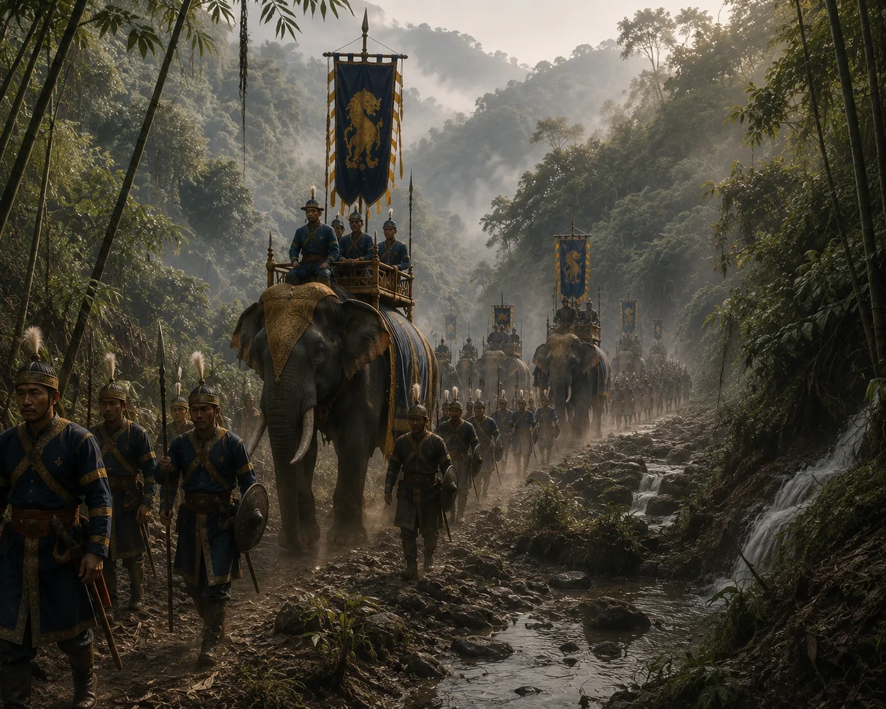

Suteuphaa Marshals the Royal Army
c. 1278 · The coming of Sukaphaa

King Suteuphaa mobilizes an expeditionary army equipped with iron-tipped arrows, daos, and war shields into the foothills.
Sources have not yet been catalogued for this record.
People: Suteuphaa